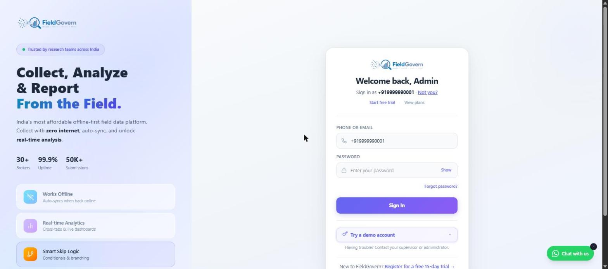

Disclaimer: This article is educational and does not constitute legal advice. Consult a qualified legal professional for advice specific to your organisation's data protection and procurement obligations.
Ask most M&E teams which country their survey data is stored in and you'll get a shrug. The form-building tool is foreign, the sign-up was a credit card and an email address, and nobody on the team has ever seen a server. That used to be fine. It isn't anymore — not for government-linked research, not for donor-funded NGO programmes handling health or livelihood data, and increasingly not for university studies that touch personally identifiable information.
A number of the most widely used survey platforms in Indian field research — the tools that power household surveys, panel studies, and CAPI data collection across the country — are headquartered outside India and host respondent data on cloud infrastructure in the United States or Europe by default. For a long time this was an invisible detail. Under the Digital Personal Data Protection Act 2023 (DPDP Act) and a fast-growing set of state procurement rules, it isn't invisible anymore.
What "Data Residency" Actually Means
Data residency is simply the geographic location where your data is stored at rest — which country, and often which specific cloud region within that country, physically holds the database your survey responses sit in. It's a distinct concept from two things people often conflate it with:
- Data sovereignty — which country's laws govern the data, regardless of where it's stored. A server in Mumbai can still be subject to a foreign government's legal reach if the company operating it is headquartered abroad and subject to laws like the US CLOUD Act, which can compel American companies to hand over data stored anywhere in the world.
- Data localisation — a regulatory requirement (not universal in India yet, but sector-specific in places like RBI payments data) that certain categories of data must be stored exclusively within national borders, with no copy permitted abroad.
For most field research teams, the practical question is narrower than all three of these: when a respondent in a village in Telangana answers a health survey question, which country does that answer end up sitting in, and which country's courts, regulators, and government requests can reach it?
Why This Matters Under the DPDP Act
The DPDP Act takes a comparatively liberal approach to cross-border data transfer compared to some global privacy frameworks — it does not impose blanket data localisation. Personal data can generally be transferred outside India, except to countries the Central Government specifically restricts by notification. But "generally permitted" is not the same as "irrelevant," and three provisions matter directly for survey and research data:
1. The Data Fiduciary Is Still Accountable
Even when your data sits abroad, your organisation — the Data Fiduciary under DPDP — remains fully accountable for how it is processed, secured, and used. Storing data overseas does not transfer your compliance burden to the cloud provider or the software vendor. If there's a breach, the Data Protection Board of India will look to you, the organisation that collected the data, first.
2. Government Requests Get More Complicated
When a state Health Department, a court, or a law-enforcement body needs lawful access to research data — for an audit, a grievance investigation, or a public-interest inquiry — data held on India-based infrastructure by an India-registered company is straightforwardly reachable through domestic legal process. Data held by a foreign entity on foreign servers may be subject to a slower, more uncertain international legal process, even when the data concerns Indian citizens and was collected inside India.
3. "Significant Data Fiduciaries" Face Extra Scrutiny
The DPDP Act allows the government to designate certain organisations — based on volume and sensitivity of data processed — as Significant Data Fiduciaries (SDFs). SDFs face additional obligations: mandatory Data Protection Officer appointment, periodic data protection impact assessments, and independent data audits. Organisations processing large volumes of health data, children's data, or biometric data through field surveys are plausible candidates once the government finalises SDF criteria. For an SDF, cross-border data flows attract closer regulatory attention, and vendor due diligence — including where the vendor stores data — becomes something an auditor will actually ask about.
Most NGOs and research units will never see a DPDP penalty notice. What they will see, increasingly, is a donor compliance review or a government grant audit asking: "Where is this data hosted, and do you have a signed data processing agreement with that vendor?" If your answer is "I'd have to check with a support team in a different time zone," that's a real operational gap.
The Growing Trend: Tenders That Specify India-Hosted SaaS
Procurement language has shifted noticeably over the past two years. State government and public sector undertaking (PSU) tenders for survey, monitoring, and data collection software increasingly include clauses along these lines:
- Data must be hosted on servers physically located within India.
- The vendor must be a company registered and operating in India, with an India-based support and escalation structure.
- Preference or mandatory requirement for vendors empanelled with NIC (National Informatics Centre) or listed on GeM (Government e-Marketplace).
- A signed Data Processing Agreement (DPA) covering data ownership, breach notification timelines, and data return/deletion on contract termination.
This mirrors a broader pattern across Indian public procurement — a preference for domestically hosted, domestically supported software for anything touching citizen data, echoed in guidance from MeitY on cloud empanelment (MeitY-empanelled cloud service providers) for government workloads. Even where a tender doesn't explicitly mandate India hosting, evaluation committees increasingly score it favourably, and grant-making bodies in the DPDP era are starting to ask the same question of their NGO grantees.
For NGOs and academic units that aren't directly bound by government procurement rules, this trend still matters indirectly: if your programme is co-funded or monitored by a state department, or if you plan to bid on government-linked evaluation work, using foreign-hosted tools can become a disqualifying detail late in a procurement process — after you've already built your data collection workflow around a specific platform.
| Signal | Foreign-Hosted SaaS (typical) | India-Built & Hosted SaaS |
|---|---|---|
| Primary data centre region | US / EU (often us-east or eu-west by default) | India (Mumbai / Hyderabad region) |
| Entity you're contracting with | Foreign parent company, India sales office if any | India-registered private limited company |
| Government legal access to data | Via mutual legal assistance treaty (MLAT) — slow, uncertain | Via standard Indian domestic legal process |
| NIC / GeM empanelment eligibility | Rare | Achievable, common for India-built platforms |
| DPA signed under Indian jurisdiction | Sometimes only under foreign jurisdiction/arbitration | Typically Indian jurisdiction and courts |
A Practical Vendor-Evaluation Checklist
If you're choosing or renewing a survey/data-collection platform and want to actually verify data residency claims rather than take a marketing page at face value, work through this before you sign:
What "Compliant" Actually Looks Like
FieldGovern is built and operated by Pavankumar Deshetty, an India-based developer, in strategic marketing partnership with Dataworx, with respondent data hosted on India-region cloud infrastructure. That's not a differentiator we invented for marketing — it falls directly out of who built the product and where. Every FieldGovern account gets a signed Data Processing Agreement, GST-compliant invoicing in INR, and a support team working IST hours who can answer a data-residency question in one message instead of routing it through a global ticketing system.
None of this replaces your own legal review. But it does mean the basic vendor-evaluation checklist above — cloud region, DPA, contracting entity, support hours, GST invoicing — has straightforward, verifiable answers rather than a shrug.

Which Cloud Regions Actually Count as "India-Hosted"
Not every claim of India hosting means the same thing technically, and it's worth knowing the difference before you take a vendor's word for it. The major global cloud providers now operate India-specific regions — AWS's Mumbai and Hyderabad regions, Microsoft Azure's Central India (Pune) and South India (Chennai) regions, and Google Cloud's Mumbai and Delhi regions. A vendor genuinely hosting in India should be able to name the specific region their production database runs in, not just say "we use a cloud provider with an India presence."
Be wary of a subtler version of the same gap: a vendor whose application servers run in an India region but whose database, backups, or analytics pipeline run elsewhere — sometimes because a secondary service (email delivery, error logging, an analytics add-on) defaults to a US region and nobody configured it otherwise. This is usually an oversight rather than deception, but it means your respondent data can end up partially outside India even when the vendor believes, in good faith, that they're India-hosted. Ask the direct question — "does every service that touches respondent personal data run in an India region, including backups and any third-party integrations?" — rather than accepting a general assurance.
Common Objections, Addressed
Two objections come up often when this topic is raised with research teams, and both deserve a direct answer rather than a dismissal.
"Our current tool has more features — is data residency really worth switching over?" For most programmes, the answer is that residency shouldn't be your only criterion, but it should be a hard filter, not a nice-to-have, particularly if you have any government-linked funding or partnership. A feature-rich tool that disqualifies you from a state tender, or that creates a genuine audit gap, is a real operational cost that a features comparison alone won't show you.
"Isn't this just a compliance checkbox that doesn't actually reduce risk?" Not quite. Data residency changes the practical mechanics of a breach response or a lawful-access request. If your data sits on India-based infrastructure with an India-registered vendor, an Indian court order or a Data Protection Board directive reaches it through ordinary domestic process. If it sits abroad, the same request can require international legal cooperation that takes months rather than days — a meaningful difference if a breach or grievance ever needs to be resolved quickly to protect respondents.
The Bottom Line
Data residency used to be a technical detail nobody in a research team thought about. Between the DPDP Act's accountability provisions, the rise of Significant Data Fiduciary scrutiny, and a wave of state government and PSU tenders that now specify India-hosted software, it has become a procurement and compliance detail that can determine whether your organisation is eligible for certain funding or government-linked work at all. The good news is that verifying it takes one honest conversation with your vendor — the checklist above is a reasonable place to start that conversation.
Built in India, Hosted in India
FieldGovern is an India-registered company hosting data on India-region infrastructure, with a signed DPA and GST invoicing as standard. See what a compliant survey stack looks like.
Start Free Trial